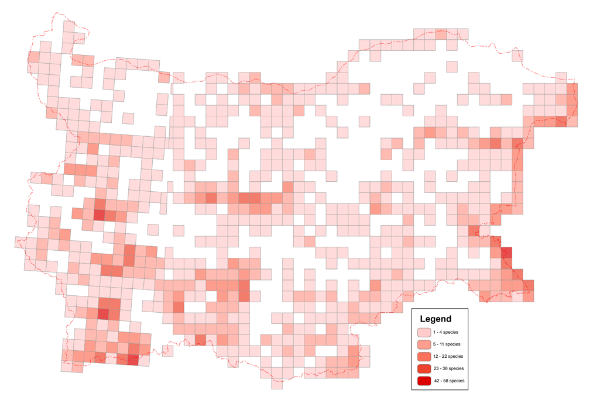
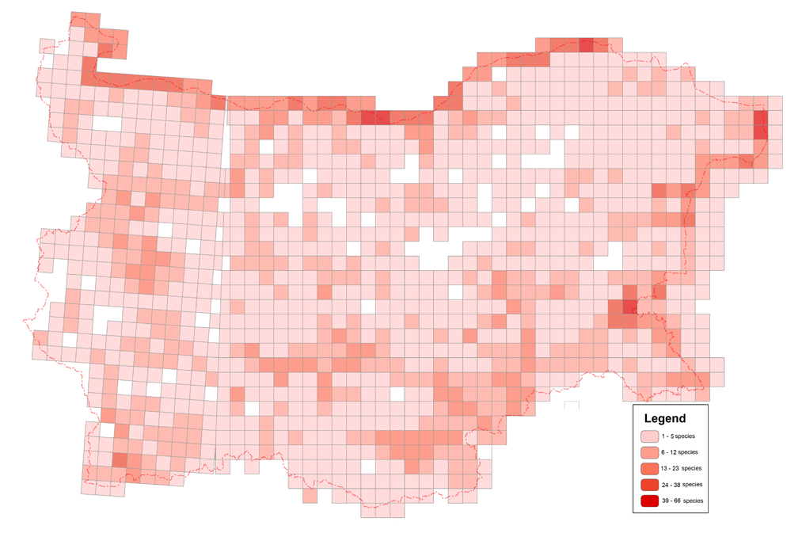
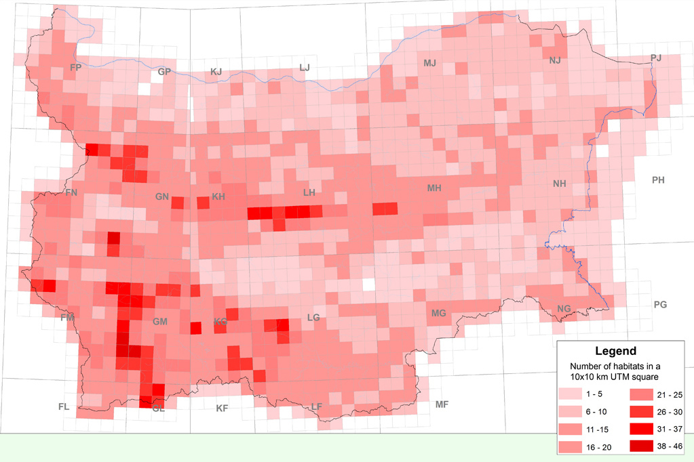
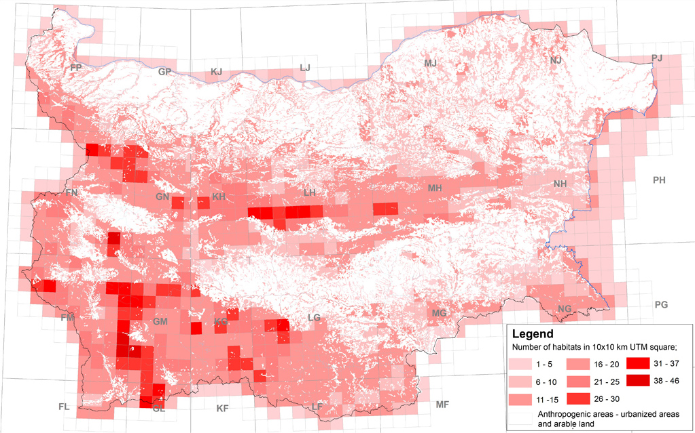

In the last decades, marked by the worries and concerns of society for the conservation of nature, it has often been claimed that Bulgaria is among the countries with the richest biodiversity in Europe. For the wider audience however, this fact remains only an abstract phrase. Most Bulgarians know only little of this treasure and cannot imagine its diversity. Therefore, opposition rises when the conservation of biodiversity imposes restrictions on some incompatible investment measures and activities. In most cases it is due to the lack of information on these issues.
Today, we finally have the necessary information and abilities to demonstrate to the public, without improvisations, the importance of the different parts of our country for the conservation of rare and endangered species and habitats.
For this purpose the information on the 1095 plant, fungal and animal species, and the 166 habitats from the Red Data Book is summarized on three maps. For each UTM-square, 10 х 10 km, the number of these subjects is shown. The darker an UTM square is, the more important it is for nature conservation. At the same time, one should bear in mind that if a certain species or natural habitat is not given for a given area in the current Red Data Book, it does not mean that it does not occur in this area. The correct understanding and interpretation of these maps demands good understanding of the approaches that have been applied in the course of their elaboration.
The elaboration of the map with the present localities of the plants and fungi is based on the recording only of the localities for which the authors have real data for the last 10 years (Fig. 1). In reality, very often the distribution of these species is wider and it is provided in the texts of the species under consideration. If this distribution were also to be given on the map, then the number of the target species in each UTM square would increase considerably.
Fig. 1. Map of the distribution in the UTM 10 km grid of the plant and fungal species
Due to the great abilities for distribution and the natural cycles in the changes of the numerical strength of their populations, another approach has been applied for the animals. The presence of the target species in the UTM squares is recorded not only if the species has been registered in this area for the last years, but also when there are older data available on its distribution and the conditions in these areas are still favourable for the respective species and no migration barriers exist for distribution of this species in the respective territory or the neighbouring ones. (Fig. 2).
Fig. 2. Map of the distribution according to a UTM 10 km grid of the animal species
The map of the natural habitats is based on the model of registered localities by means of field studies during the last 10 years or on the data from forest management plans, especially when forest habitats are concerned (Fig. 3).
Fig. 3. Map of distribution according to UTM 10 km grids of the natural habitats
In the three maps, even a spot locality is presented by colouring the whole respective UTM grid square, although it may be very small when compared to the 100 km2 area of this square. If this fact is not considered, one can wrongly assume that there is not a single square meter from the map of Bulgaria that is not occupied by a target species or natural habitat. To present a picture that is closer to the reality, Fig. 4 presents areas with strong anthropogenic impact – urban areas, industrial areas, open mines, stone pits, and arable land (excluding the ones with permanent plantations). Even at this scale it is clear how large is the area of the country which is mainly managed by man; the natural habitats in it are completely destroyed or severely damaged.
Fig. 4. Map of distribution according to the UTM 10 km grid of the natural habitats. White areas are those with strong anthropogenic impact.
The maps demonstrate the following specificities of the distribution of the target species and the natural habitats:
The information in this chapter can serve as a starting point for a very important algorithm – the search of territories for new investments: the extent of the urban areas, development of the road and industrial infrastructure, tourist complexes, ski tracks, golf courses, wind / electric power stations, photovoltaic parks. Regretfully, these steps have been taken without consultations with experts in the field of biodiversity by now. The information given here by no means excludes the necessity of targeted expertise but we hope that it will contribute to the better understanding of the needs for such expertise in society – from the single citizen of the country to the state and local authorities, executive and legislative authorities.
From this point of view, the darker a UTM square meter is, the more problematic it is for new investments with negative environmental impact. On the other hand these ares are more suitable for tourism, especially places for cognitive tourism.
We hope that this first information will provoke the reader to learn more about the species and habitats in the area where he/she lives, and that he/she will gain a new respect for the environment and the species within it, and proudly show them to his/her children and delve deeply into the pages of this Red Data Book of his/her country.